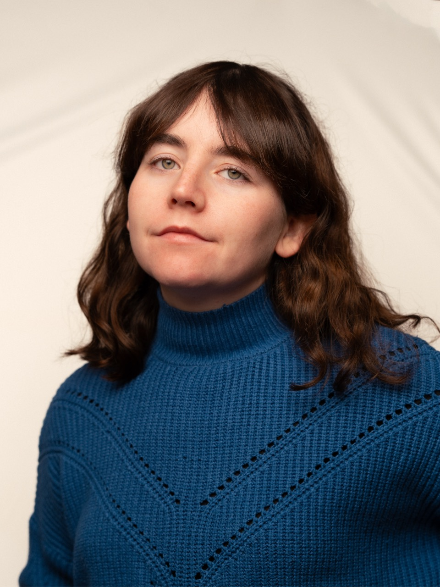

I’m Noemi Rey. I’ve been drawn to photography, stories and cinema since I was very young, and I studied photography at EASD in Valencia.
What I love about photography isn’t the single image. It’s what happens when images sit next to each other: alone, a photograph says one thing; together, they start to tell a story. A wedding is made of that kind of moment, small things that only mean something in sequence. I try to photograph the day so the gallery reads as one story, from the first moments of the morning to the party.
